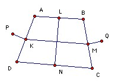

A convex quadrilateral has equal diagonals. Equilateral triangles are constructed on the outside of each side. The centers of the triangles on opposite sides are joined. Show that the two joining lines are perpendicular.
Solution

Take the midpoints of the sides to be K, L, M, N as shown. Then KL and MN are parallel to BD and half its length. So KLMN is a parallelogram. But AC = BD, so it is actually a rhombus and LN is perpendicular to KM. Let P, Q be two centers as shown. Then it is sufficient to show that PQ is parallel to KM. Vectorially, we have LN = LA + AD + DN and LN = LB + BC + CN. Adding we get LN = ½AD + ½BC = AK + BM. Now if we rotate AK anticlockwise through 90o and multiply its length by 1/√3 we get PK. Similarly, BM becomes MQ. So the vector sum of PK and MQ is perpendicular to LN and hence parallel to KM. Hence the vector sum PK + KM + MQ is parallel to KM, as required.
Thanks to Vivek Kumar Mehra

© John Scholes
jscholes@kalva.demon.co.uk
25 Nov 2003
Last updated/corrected 25 Nov 2003